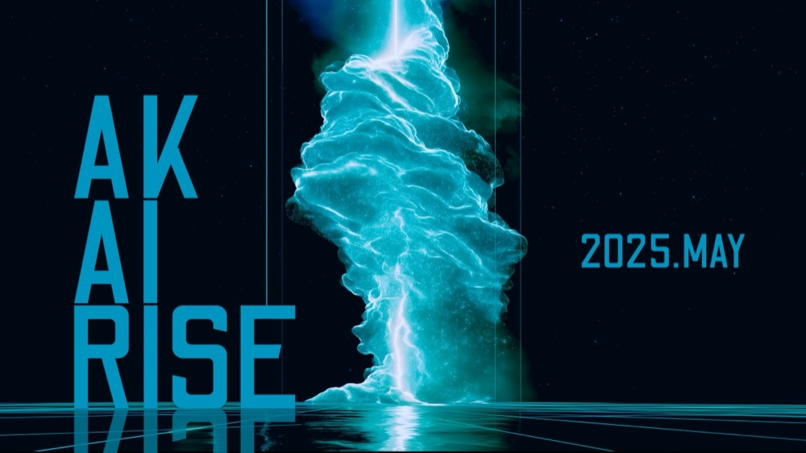
애경 그룹 핵심인재 AI 업스케일링 AK AI RISE 일시 : 2025. 5. 16(금), 10:00–18:00 장소 : 서울 중구 대상: 애경그룹 핵심인재 |
안녕하세요, 제이커브스쿨입니다!
디지털 전환 시대 HRD(인재개발)의 초점이 바뀌고 있습니다. 과거 단순 직무 교육을 넘어, 생성형 AI를 실무에 접목하는 역량이 조직 경쟁력으로 떠오르고 있죠.
이에 애경그룹에 참가자 맞춤형 AI 업스케일링 워크숍을 제공했습니다.
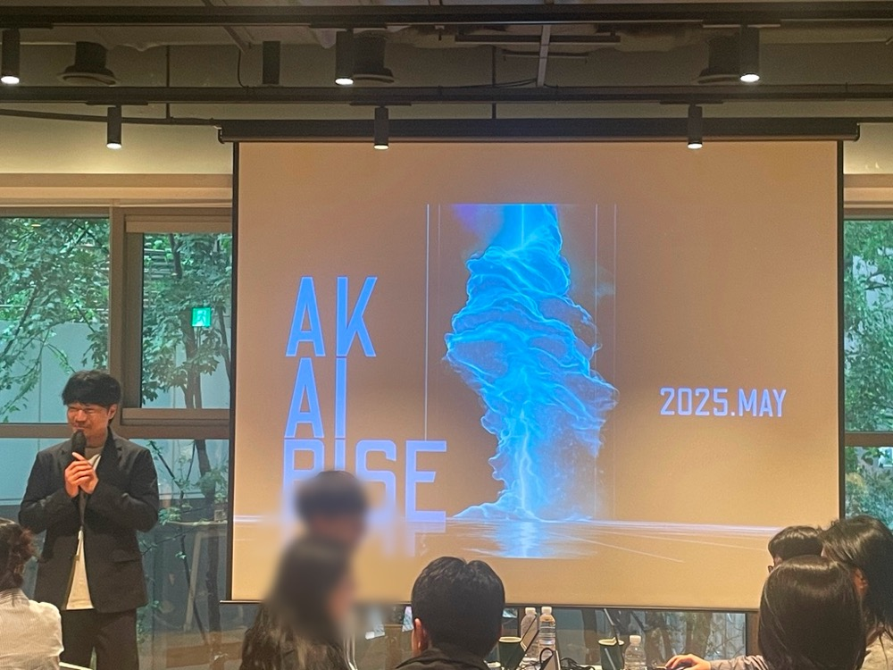
강사진은 1시간 전부터 도착해 장비 점검과 리허설을 마치고, 참가자 개별 요구사항을 즉각 반영하며 최상의 학습 환경을 제공했습니다.
0. 아이스브레이킹: 기대감 조성
참가자들은 간단한 퀴즈와 세션으로 어색함을 풀어갔습니다. AI로 업무 혁신을 체험할 여정에 앞서, AI와 참여자들에 대한 거리를 좁히는 기회가 되었습니다.
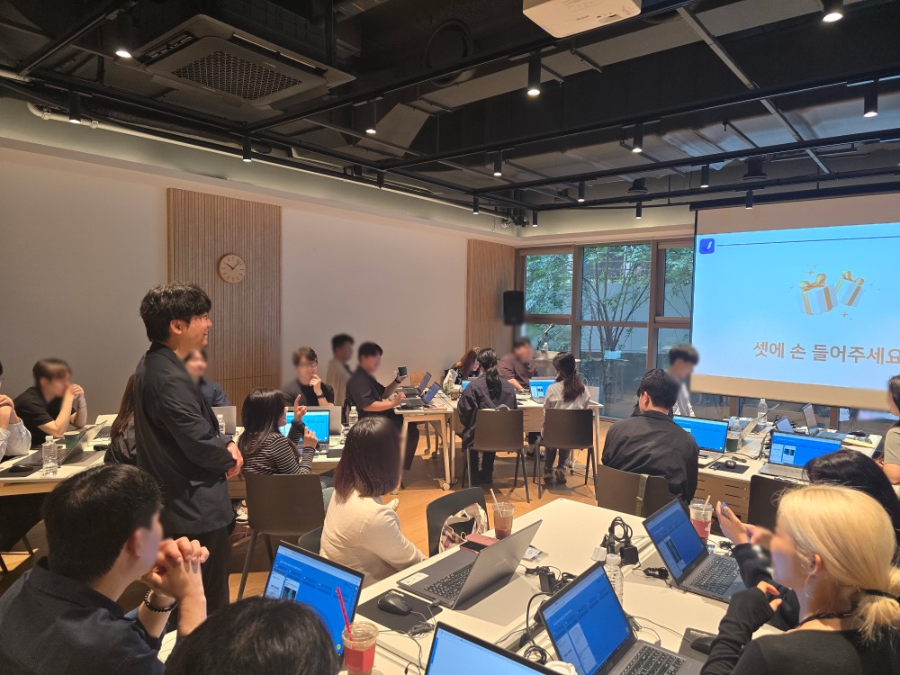
이렇게 분위기를 다진 후, 본격적으로 AI 리터러시 강연으로 넘어갔습니다.
1. AI 리터러시 강연: 기초부터 최신 트렌드까지
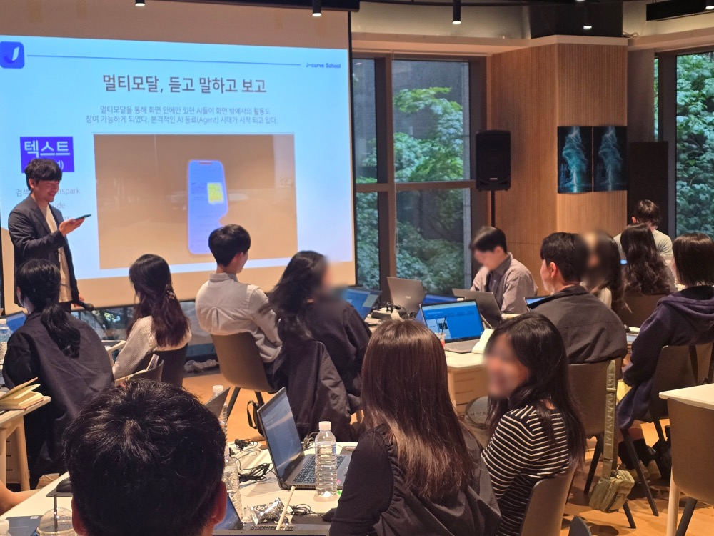
참가자들은 이론 중심 강연이 아니라, 2025년 실제 비즈니스 적용 사례 위주의 강연을 들었습니다.
AI가 어떻게 현업에 도입되어 성과를 냈는지 구체적 사례를 통해 이해하며, 참여자들에게 지루함 없이 ‘나도 이렇게 활용할 수 있겠다’는 자신감을 자연스럽게 얻도록 진행되었습니다.
강연 이후, AI 디자이너 협업 세션이 진행 되었습니다.
2. AI 디자이너 협업 세션: 창의적 비주얼 제작 심화
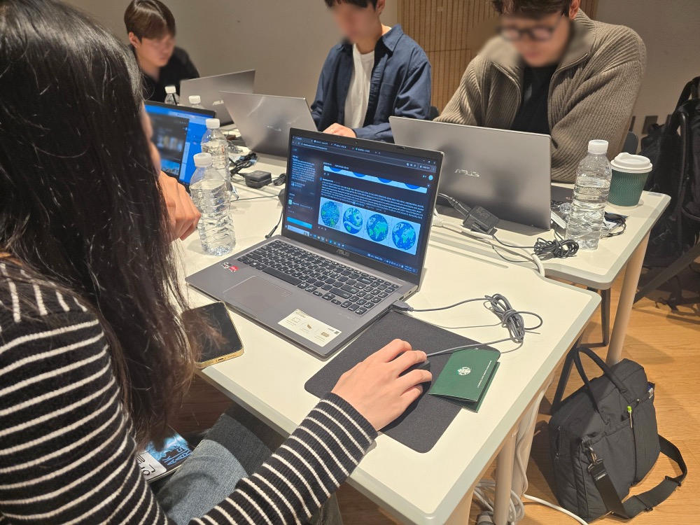
참가자들은 주어진 업무 리포트 주제에 따라 슬라이드 콘텐츠를 기획했습니다. 먼저 팀별로 핵심 메시지를 도출하고, AI 디자이너에게 단계별 프롬프트를 제시해 2~3개의 후보 이미지를 생성했죠.
- 프롬프트 반복 개선: 초기 결과물을 검토하고, 톤·컬러·구도 요소를 반영해 재프롬프트 진행
- 최적 이미지 선택: 생성된 후보 중 가장 메시지를 명확히 전달하는 이미지를 선택
- 슬라이드 레이아웃 적용: 선택 이미지를 PPT에 배치하고, AI가 제안하는 시각 요소 가이드를 통해 디자인 완성
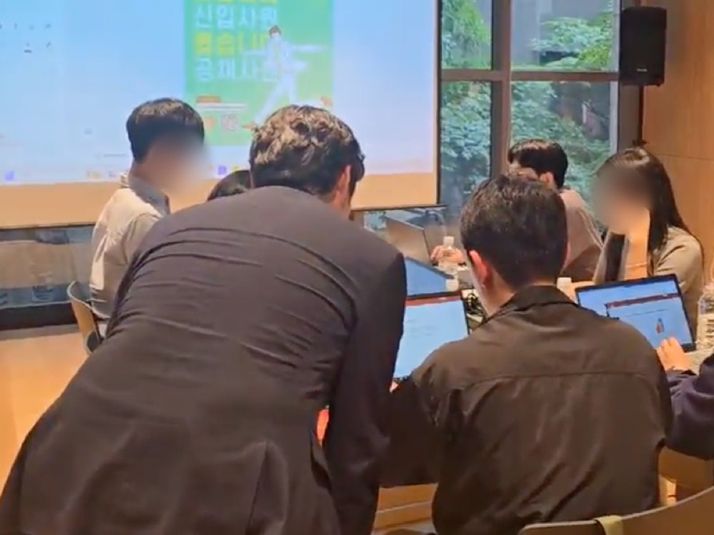
팀 제이커브와 함께하는 워크숍에서는 보조강사를 배치해 모든 참여자들이 함께 결과물을 완성할 수 있도록 돕습니다.
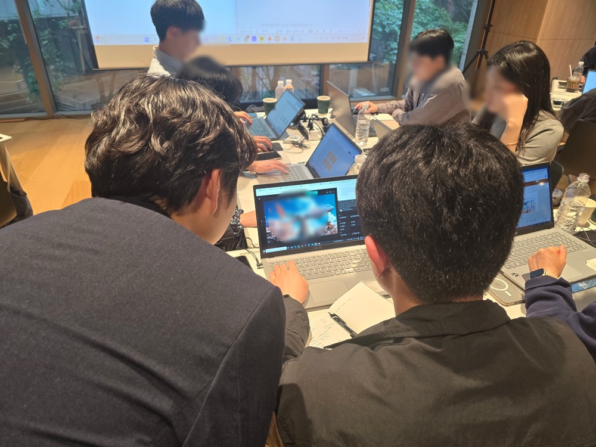
그렇게 AI디자이너와 협업 과정을 통해 “반복적인 프롬프트 과정을 거치니 원하는 스타일이 빨리 나온다”는 평을 얻었습니다.
디자이너와 AI의 협업 효과를 체험한 후, 워크숍은 AI 기획 세션으로 이어갔습니다.
3. AI 기획자 협업 세션: 전략 기획과 실행 플로우 체험
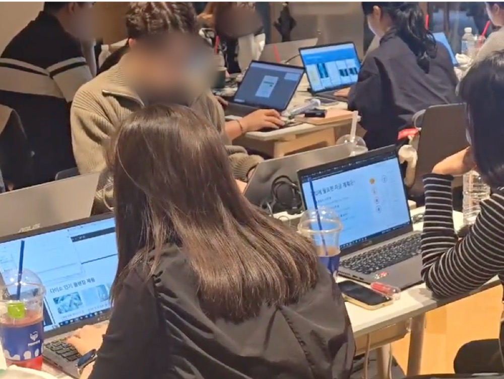
참가자들은 AI툴들을 사용해 실제 업무 흐름을 따라 프로젝트를 완수했습니다.
- 리서치 준비: AI로 필요한 자료를 빠르게 수집해 ‘무엇을’, ‘왜’ 다룰지 명확히 했습니다.
- 리서치 정리: 수집한 정보를 AI가 요약·정리해 주요 포인트를 추출, 기획 방향이 뚜렷해졌죠.
- 초안 기획: AI와 대화하며 보고서 4개 장 구성 초안을 만들고, 구조를 잡았습니다.
- PT 초안 완성: 만들어진 초안을 바탕으로 PPT 형태로 정리해 보며, 기획과 디자인이 결합된 결과물을 확인했습니다.
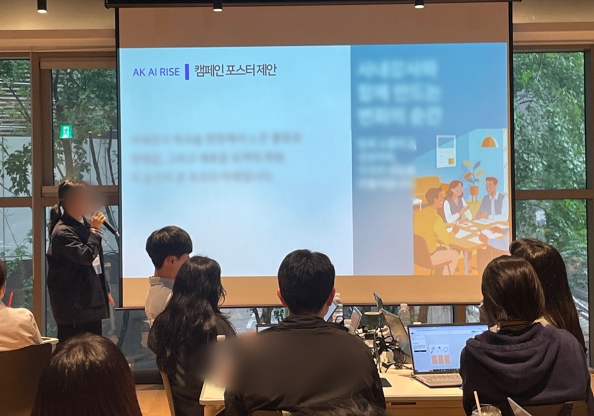
그리고 가장 중요한 부분중 하나로 자신의 결과물을 업로드하고, 조별로 발표 후 피드백을 주고받았습니다.
참여자들이 가진 아이디어나 비전을 AI를 사용해서 빠르게 구체화 한 후 공유하는 것 까지 이젠 혼자서 모든 일을 할 수 있다 경험을 심어 줄 수 있는 전체 세션이었습니다.
이로써 AI 기획자 협업 세션의 모든 과정을 성공적으로 마무리했습니다. 이제 워크샵 전반의 성과와 다음 단계를 살펴보겠습니다.
마무리 & 다음 단계
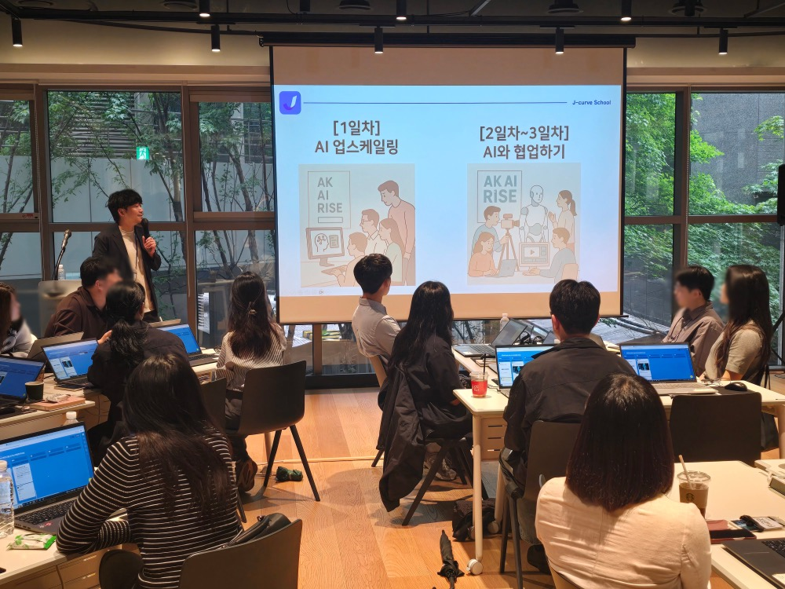
AK AI RISE 워크샵은 강의, 실습, 토론이 결합된 몰입형 프로그램이었습니다.
참가자들은 생성 AI를 협업 파트너로 경험하며, 자신만의 제안서, 이미지, 기획 발표서를 단 몇 시간 만에 완성했습니다.
AI를 효과적으로 사용할 수 있는 인재가 되기 위한 첫 걸음을 딛게 된 것입니다.
이 워크샵은 앞으로 2, 3회차로 이어집니다. 다음 세션에서는 AI와 협업하며 실제 업무에 적용하는 방법과 고도화 전략을 다룰 예정이니, 많은 기대 부탁드립니다!
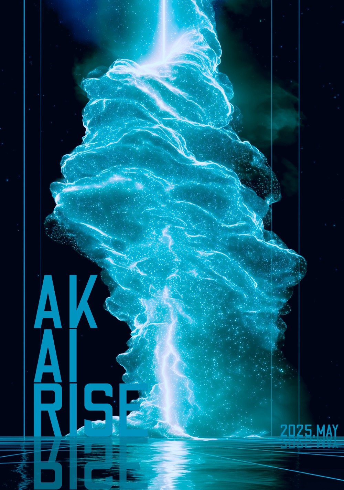
제이커브스쿨이 궁금하다면?
제이커브스쿨은 ‘생성AI 전문 교육 기업’으로,
대학생·공공기관·기업 대상 맞춤형 AI 실무 역량 강화 프로그램을 제공합니다.
개인 직무 역량 × 생성 AI = 업무 혁신, 지금 경험해보세요!
제이커브 스쿨 웹사이트 가기
문의·신청: info@jcurveschool.com

애경 그룹 핵심인재 AI 업스케일링
AK AI RISE
일시 : 2025. 5. 16(금), 10:00–18:00
장소 : 서울 중구
대상: 애경그룹 핵심인재
안녕하세요, 제이커브스쿨입니다!
디지털 전환 시대 HRD(인재개발)의 초점이 바뀌고 있습니다. 과거 단순 직무 교육을 넘어, 생성형 AI를 실무에 접목하는 역량이 조직 경쟁력으로 떠오르고 있죠.
이에 애경그룹에 참가자 맞춤형 AI 업스케일링 워크숍을 제공했습니다.

강사진은 1시간 전부터 도착해 장비 점검과 리허설을 마치고, 참가자 개별 요구사항을 즉각 반영하며 최상의 학습 환경을 제공했습니다.
0. 아이스브레이킹: 기대감 조성
참가자들은 간단한 퀴즈와 세션으로 어색함을 풀어갔습니다. AI로 업무 혁신을 체험할 여정에 앞서, AI와 참여자들에 대한 거리를 좁히는 기회가 되었습니다.

이렇게 분위기를 다진 후, 본격적으로 AI 리터러시 강연으로 넘어갔습니다.1. AI 리터러시 강연: 기초부터 최신 트렌드까지

참가자들은 이론 중심 강연이 아니라, 2025년 실제 비즈니스 적용 사례 위주의 강연을 들었습니다.AI가 어떻게 현업에 도입되어 성과를 냈는지 구체적 사례를 통해 이해하며, 참여자들에게 지루함 없이 ‘나도 이렇게 활용할 수 있겠다’는 자신감을 자연스럽게 얻도록 진행되었습니다.
강연 이후, AI 디자이너 협업 세션이 진행 되었습니다.
2. AI 디자이너 협업 세션: 창의적 비주얼 제작 심화

참가자들은 주어진 업무 리포트 주제에 따라 슬라이드 콘텐츠를 기획했습니다. 먼저 팀별로 핵심 메시지를 도출하고, AI 디자이너에게 단계별 프롬프트를 제시해 2~3개의 후보 이미지를 생성했죠.

팀 제이커브와 함께하는 워크숍에서는 보조강사를 배치해 모든 참여자들이 함께 결과물을 완성할 수 있도록 돕습니다.

그렇게 AI디자이너와 협업 과정을 통해 “반복적인 프롬프트 과정을 거치니 원하는 스타일이 빨리 나온다”는 평을 얻었습니다.디자이너와 AI의 협업 효과를 체험한 후, 워크숍은 AI 기획 세션으로 이어갔습니다.
3. AI 기획자 협업 세션: 전략 기획과 실행 플로우 체험

참가자들은 AI툴들을 사용해 실제 업무 흐름을 따라 프로젝트를 완수했습니다.

그리고 가장 중요한 부분중 하나로 자신의 결과물을 업로드하고, 조별로 발표 후 피드백을 주고받았습니다.참여자들이 가진 아이디어나 비전을 AI를 사용해서 빠르게 구체화 한 후 공유하는 것 까지 이젠 혼자서 모든 일을 할 수 있다 경험을 심어 줄 수 있는 전체 세션이었습니다.
이로써 AI 기획자 협업 세션의 모든 과정을 성공적으로 마무리했습니다. 이제 워크샵 전반의 성과와 다음 단계를 살펴보겠습니다.
마무리 & 다음 단계

AK AI RISE 워크샵은 강의, 실습, 토론이 결합된 몰입형 프로그램이었습니다.
참가자들은 생성 AI를 협업 파트너로 경험하며, 자신만의 제안서, 이미지, 기획 발표서를 단 몇 시간 만에 완성했습니다.
AI를 효과적으로 사용할 수 있는 인재가 되기 위한 첫 걸음을 딛게 된 것입니다.
이 워크샵은 앞으로 2, 3회차로 이어집니다. 다음 세션에서는 AI와 협업하며 실제 업무에 적용하는 방법과 고도화 전략을 다룰 예정이니, 많은 기대 부탁드립니다!

제이커브스쿨이 궁금하다면?
제이커브스쿨은 ‘생성AI 전문 교육 기업’으로,
대학생·공공기관·기업 대상 맞춤형 AI 실무 역량 강화 프로그램을 제공합니다.
개인 직무 역량 × 생성 AI = 업무 혁신, 지금 경험해보세요!
제이커브 스쿨 웹사이트 가기
문의·신청: info@jcurveschool.com